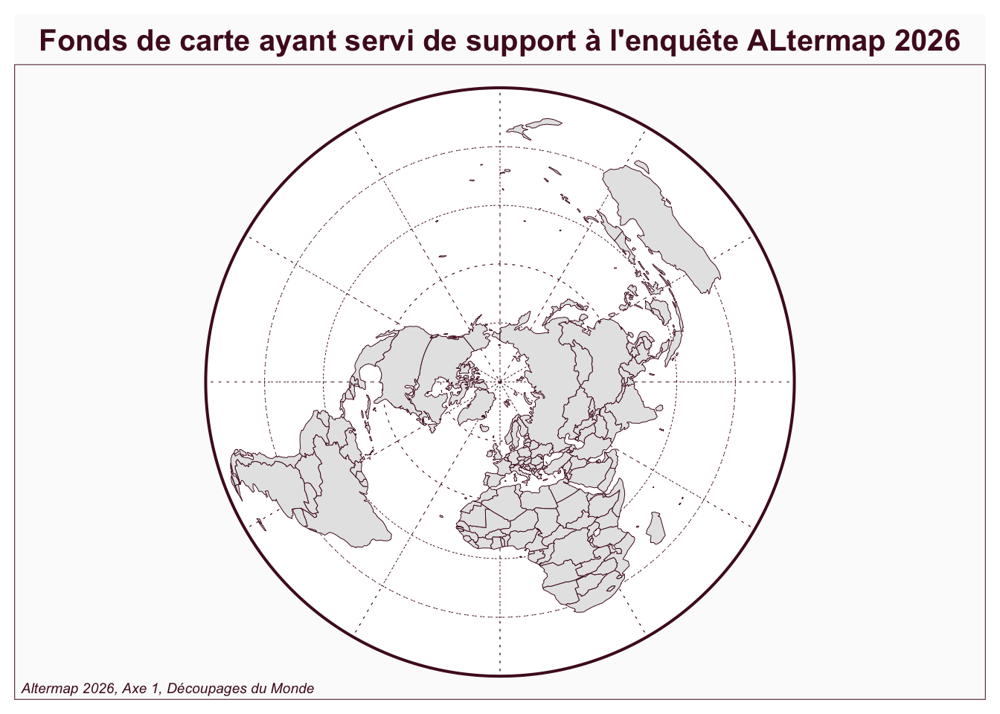
- L’objectif de ce billet est de discuter des méthodes géomatiques d’analyse des cartes mentales
Comment analyser les découpages d’un espace en régions à l’aide d’un SIG ou d’un outil équivalent tels que R ? Nous proposons ici une série de pistes pour construire des exercices pédagogiques à adapter en fonction du contenu du cours, du niveau et des logiciels connus par les étudiants.
La plupart des méthodes éléments et concepts utilisés sont décrites dans deux articles de référence publiés par C. Didelon, N. Lambert et S. de Ruffray Didelon-Loiseau, Ruffray, and Lambert (2018).
A.DONNEES
Données de repérage
On dispose de fichiers en projection polaire correspondant à la carte que les étudiants ont eu à déouper :
- world.geojson : contour du “Monde”
- world30.geojson : graticules espacés de 30 degrés de latitude et longitude
- states.geojson : contour des états représentés sur la carte
On peut donc reconstituer l’image sur laquelle les tracés ont été effectués par les étudiants dans sa géométrie projetée :
Grille régulière
Reprenant les travaux utilisés dans EuroBroadMap, nous plaçons une grille sur le fonds de carte projeté avec une superficie (évidemment variable) d’environ 150km sur 150km. Celle ci forme un carroyage régulier qui va au delà des limites du “Monde” représenté (pour les intrpolations) mais que l”on peut intersecter pour éliminer les zones hors du Monde. On peut aussi la converture en point en prenant le centre de chaque grille. Soit les fichiers suivants :
On peut visualiser la taille des carreaux en examinant la zone méridienne comprise entre Paris et Dakar :
Min. 1st Qu. Median Mean 3rd Qu. Max.
-20264081 -10064081 135919 135919 10335919 20535919 Min. 1st Qu. Median Mean 3rd Qu. Max.
-18294118 -9144118 5882 5882 9155882 18305882 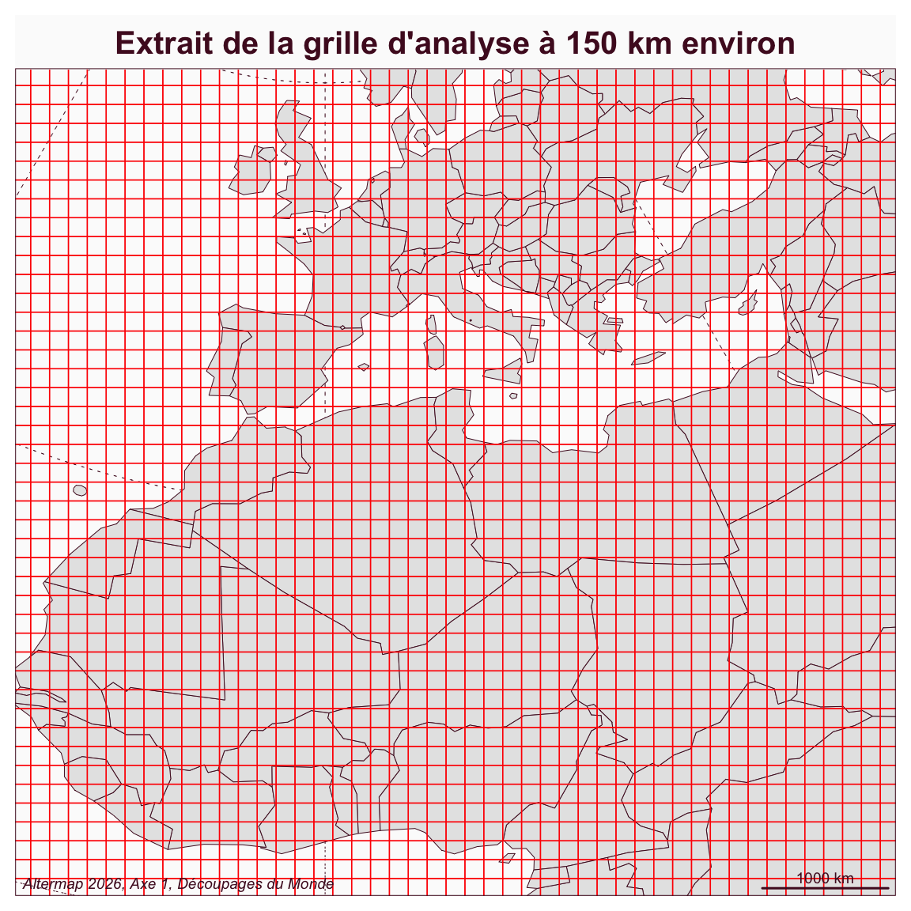
Découpages du Monde
On charge pour finir les découpages du Monde en région produits par les étudiants. On dispose initialement d’un minimum d’information sur les découpages produits par chaque étudiant (université, noms des régions) mais on pourra enrichir si on le souhaite les informations en effectuant une jointure avec les autres réponses au questionnaire.
| id | code | lieu | reg_nom | geometry |
|---|---|---|---|---|
| 1 | 001 | UPC - Paris - France | Europe | MULTIPOLYGON (((1107536 -19… |
| 2 | 001 | UPC - Paris - France | Amérique du Nord | MULTIPOLYGON (((-485167.8 -… |
| 3 | 001 | UPC - Paris - France | Amérique centrale | MULTIPOLYGON (((-8411843 38… |
| 4 | 001 | UPC - Paris - France | Amérique du Sud | MULTIPOLYGON (((-9624129 -1… |
| 5 | 001 | UPC - Paris - France | Afrique du Nord | MULTIPOLYGON (((1689752 -59… |
| 6 | 001 | UPC - Paris - France | Afrique de l’Ouest | MULTIPOLYGON (((-2440071 -7… |
| 7 | 001 | UPC - Paris - France | Afrique Centrale et Sud | MULTIPOLYGON (((2005072 -10… |
| 8 | 001 | UPC - Paris - France | États arabes | MULTIPOLYGON (((6936568 -54… |
| 9 | 001 | UPC - Paris - France | Communistes | MULTIPOLYGON (((682977 -131… |
| 10 | 001 | UPC - Paris - France | Asie du Sud-Est | MULTIPOLYGON (((7060442 -35… |
| 11 | 001 | UPC - Paris - France | Océanie | MULTIPOLYGON (((9986925 557… |
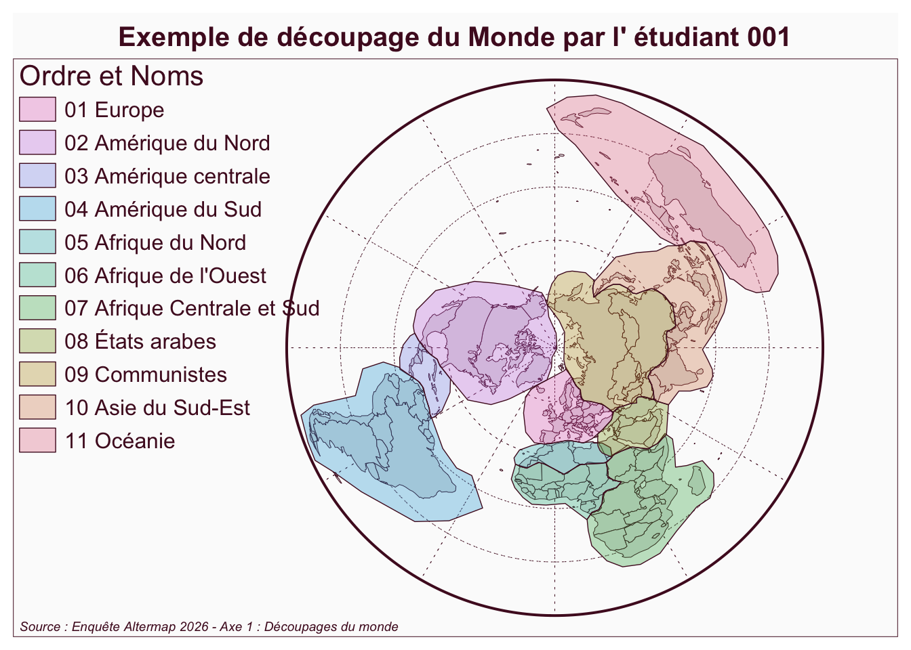
B. SUPERPOSITIONS
La première famille d’exercices consiste à superposer des découpages géométriques sans s’intéresser aux noms des régions qui sont données par les étudiants. On peut alors s’intéresser :
- aux espaces inclus et exclus de la régionalisation
- aux espaces frontaliers ou non frontaliers
En disposant une grille d’analyse, on pourra définir pour chaque cellule trois possibilités :
- exclusion : la cellule ne fait pas partie d’une région tracée par les étudiants
- coeur : la cellule est située à l’intérieur d’une région et n’est traversée par aucune frontière
- frontière : la cellule est au moins partiellement incluse mais est traversée par une frontière
B.1 Exploration visuelle
Une première étape peut consister simplement à superposer les tracés réalisés par les étudiants en donnant juste une valeur de transparence aux régions ou frontières.
Vue d’ensemble
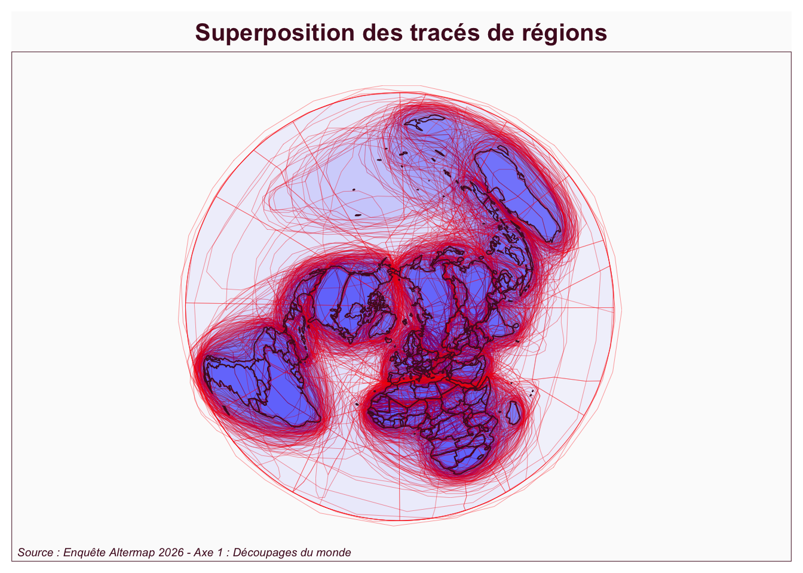
- Commentaire : Cette méthode simple permet de repérer les zones fréquemment incluses dans une région. Nous avons utilisé ici une transparence de 1/94 puisque nous avions 94 étudiants. Du coup, si un lieu est inclu dans toute les cartes il sera en bleu foncé et s’il ne l’est dans aucune en blanc. On ne peut cependant pas introduire de légende directement. Quant aux frontières, elles se déduisent de la superposition des lignes rouges. Mais la méthode ne permet pas de bien voir les effets de lignes superposées. Il peut être alors utile de zoomer.
Zoom sur l’Amérique du Nord
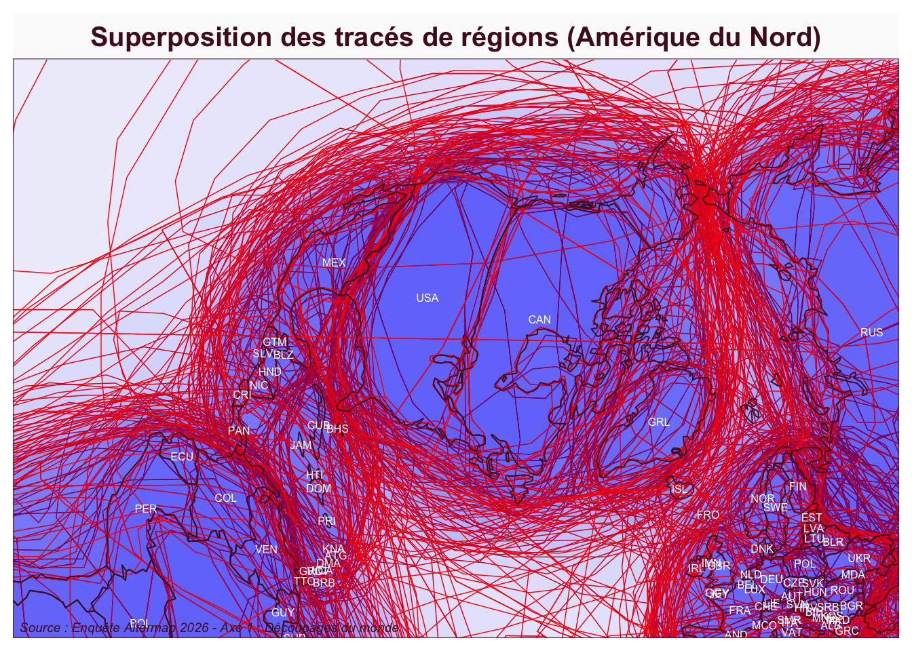
Commentaire : Le zoom permet ici de montrer que la majorité des étudiants ont inclus l’ensemble des Amériques dans leurs découpages. Mais ils hésitent sur la façon de découper ce continent en deux ou trois parties, certains privilégiant la frontière Etats-Unis/ Mexique,d’autres le canal de Panama. On note également quelques hésitations sur les Caraïbes et leur rattachement.
Zoom sur la Méditerranée
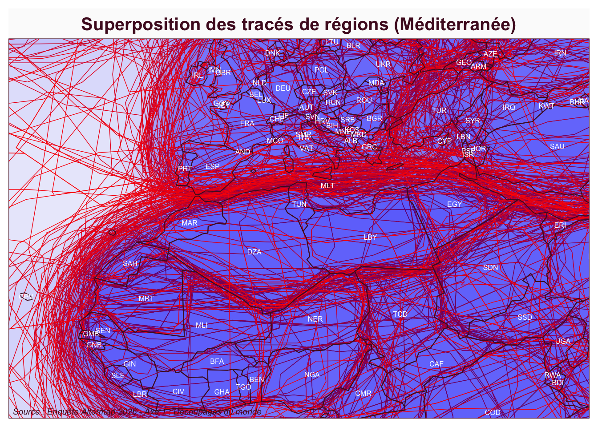
Commentaire : Le zoom sur la Méditerranée montre des frontières beaucoup plus nette le long de cette mer avec des points de passage quasi obligés comme Gibraltar, le détroit de Sicile ou le Bosphore. Il y a toutefois un certain nombre d’étudiants qui ont opté pour une limite sur le Sahara, mais mooins fréquemment. On note également que la Méditerranée n’est pas en bleu foncé, ce qui signifie que certains étudiants l’ont placé en dehors de leurs découpages
B.2 Inclusion/Exclusion
Par rapport à l’ensemble du disque qui représente le Monde, quelle est la part des zones qui ont été regroupées par les étudiants par rapport à celles qui ne l’ont pas été ?
La réponse à la question dépend évidemment de la projection. Si on raisonne visuellement, on peut dire par exemple que l’étudiant n°1 a regroupé 42% de la surface du disque qui lui était proposé dans des régions. Si on raisonne par rapport à la surface de la terre, il a entouré en fait 48% de la surface de celle-ci…
Exercice 1.1.1. Surface incluse par étudiant
Calculez pour chaque étudiant la part visuelle du disque qu’il a inclus dans des régions.
UPC - Paris - France USSEIN - Kaolack - Sénégal
60 34 UPC - Paris - France USSEIN - Kaolack - Sénégal
60 34 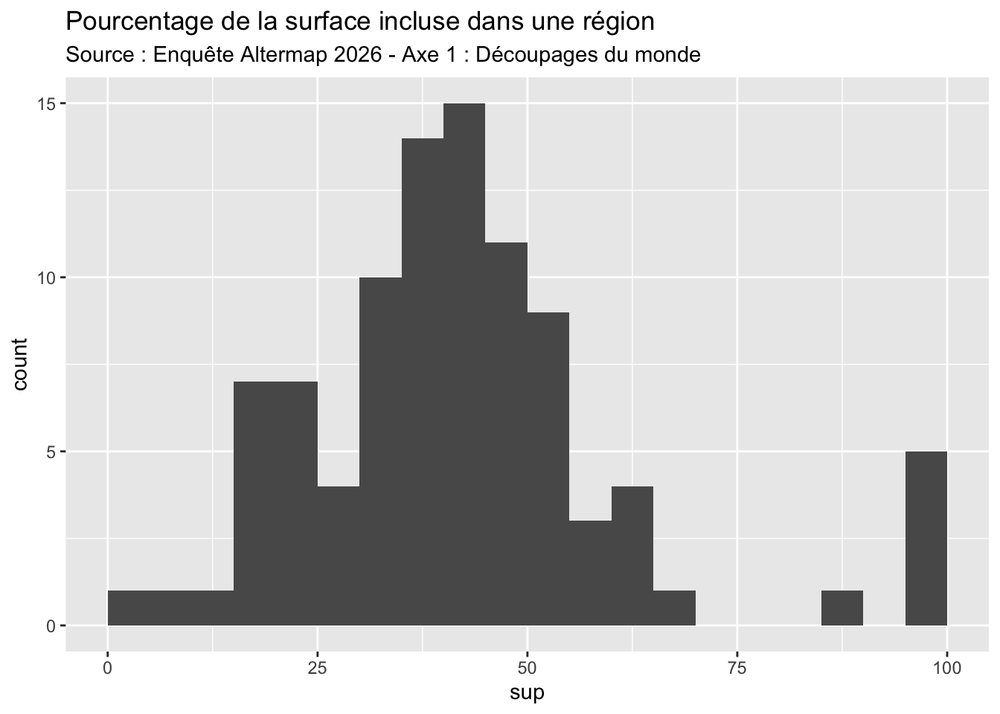
Min. 1st Qu. Median Mean 3rd Qu. Max.
4.955 31.896 40.554 42.119 49.121 100.000 - Réponse : les étudiants ont inclus en moyenne 42% du disque dans leur découpage régional. Les valeurs les plus fréquentes sont comprises entre 32% (Q1) et 49% (Q3) du disque. Mais certains étudiants n’ont inclus qu’une très petite fraction du disque (5%) alors que cinq étudiants ont découpé intégralement 100% du disque et ont même débordé au delà (ce qui n’est pas absurde puisque le fonds de carte proposé avait oublié l’Antarctique en s’arrêtant au 60e parrallèle Sud).
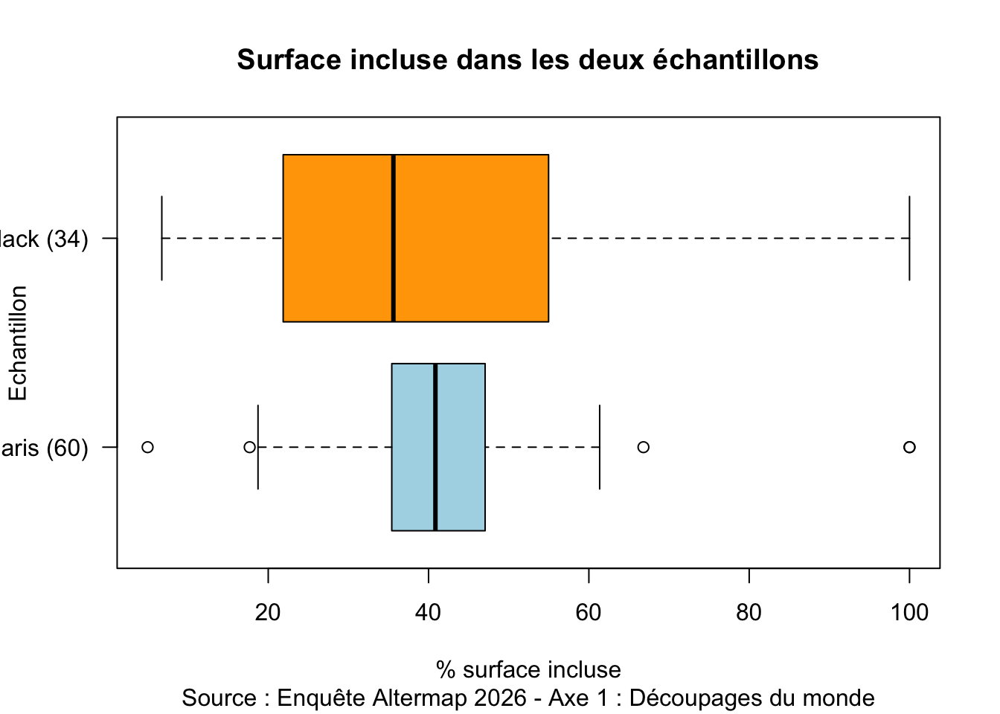
- Commentaire : Les choix effectués par les étudiants parisiens apparaissent très convergents , la majorité incluant de 20 à 60% de la surface du disque avec une concentration forte autour de 40%, ce qui signifie qu’ils ont en général essayé de découper les continents en ajoutant peu d’étendues maritimes. Il n’en va pas de même pour les étudiants de Kaolack qui ont plus fréquemment découpé tout le disque mais ont également été nombreux à ne prendre en compte qu’une partie des masses continentales.
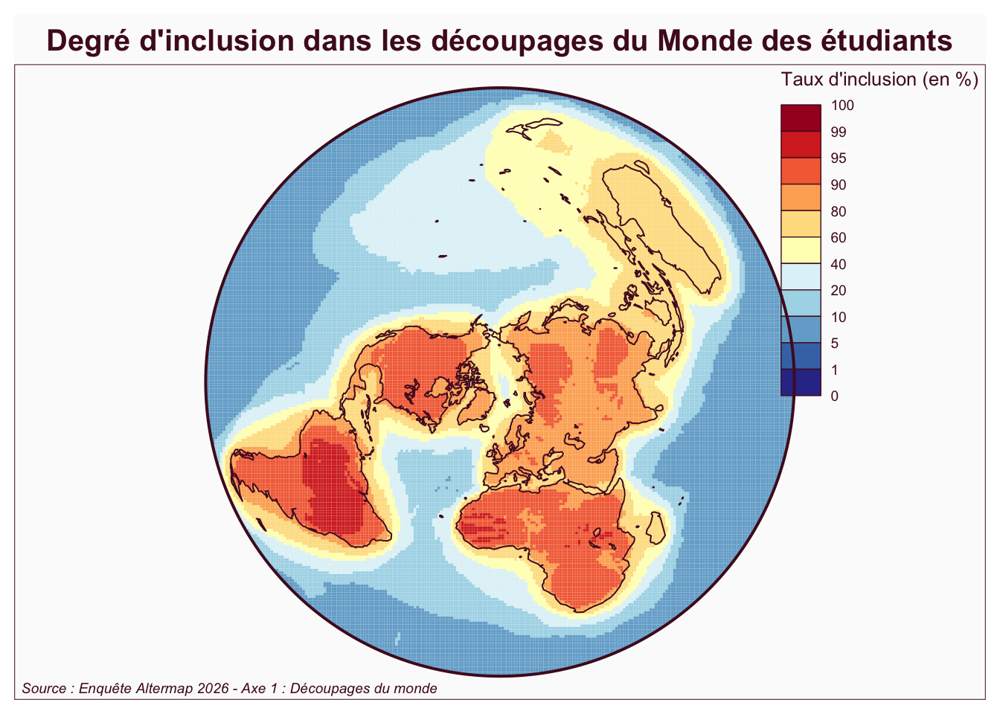
- Commentaire : La plupart des terres émergées ont été incluses dans les découpages du Monde par plus de 80% des étudiants, exception faite de Madascar, l’Australie et l’Asie du sud-est qui ne se retrouvent qua dans 60 à 80% des cartes et de la Nouvelle-Zélande ou des îles d’Océanie qui sont présents dans moins de 60% des découpages. A l’intérieur des masses continentales, on trouve des “coeurs” qui sont inclus par plus de 90% des étudiants, notamment en Amérique du Nord, Amérique du Sud, Afrique, Sibérie ou Chine. A l’inverse, les marges océaniques sont souvent présentes dans plus de 50% des découpages dès lors que les étudiants tracent des zones circulaires ou ellipsoïdes qui ne suiventpas le tracé des côtes. Aucun point du disque n’a été inclus par moins de 10% des étudiants en raison de la présence de découpages intégraux du disque.
B.3 Frontières / Coeurs
Frontières récurrentes
Min. 1st Qu. Median Mean 3rd Qu. Max.
0.000 0.000 2.105 5.052 7.368 98.947 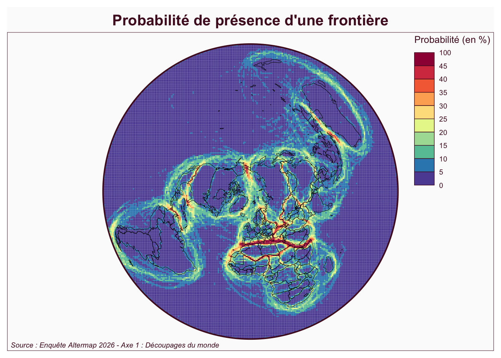
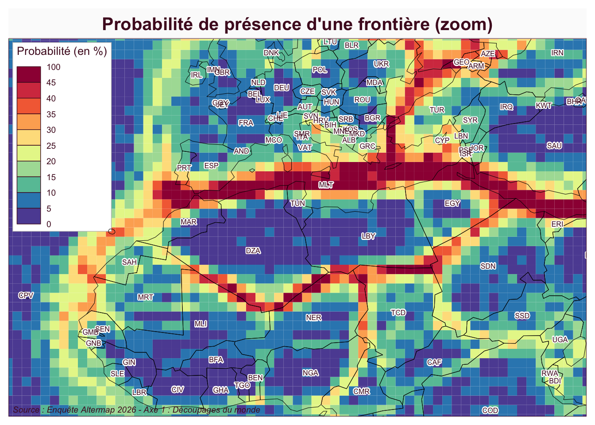
Coeurs régionaux
Les “coeurs sont des espaces fréquemment inclus dans une région sans pour autant être traversés par des frontières. On les définit simplement par la différence entre probabilité d’inclusion probabilité d’être traversé par une frontière
Vue d’ensemble
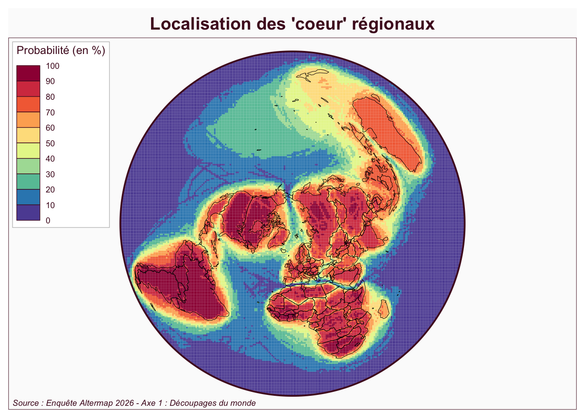
Zoom
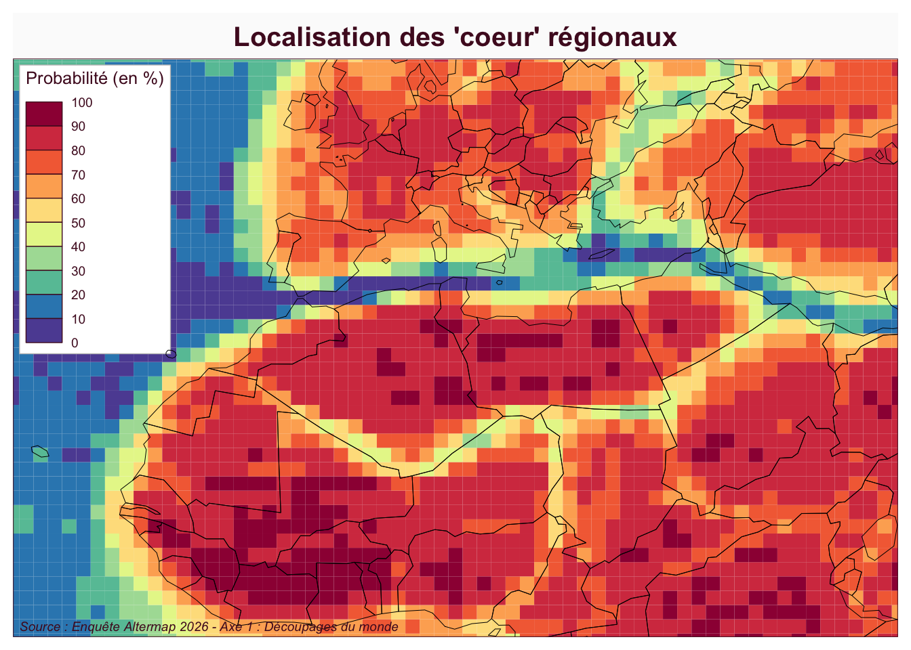
C. REGION = NOM + GEOMETRIE
Didelon, Clarisse, Sophie De Ruffray, Mathias Boquet, and Nicolas Lambert. 2011. “A World of Interstices: A Fuzzy Logic Approach to the Analysis of Interpretative Maps.” The Cartographic Journal 48 (2): 100–107. https://doi.org/10.1179/1743277411Y.0000000009.
Didelon-Loiseau, Clarisse, Sophie de Ruffray, and Nicolas Lambert. 2018. “Mental Maps of Global Regions: Identifying and Characterizing “Hard” and “Soft” Regions.” Journal of Cultural Geography 35 (2): 210–29. https://doi.org/10.1080/08873631.2018.1426950.
Citation
BibTeX citation:
@online{grasland2026,
author = {GRASLAND, Claude and LAMBERT, Nicolas and TOURE, Labaly},
title = {Analyse d’un Ensemble de Cartes Mentales à l’aide d’outils de
Géomatique Et de Cartographie {(DRAFT} {VERSION)}},
date = {2026-07-02},
url = {https://worldregio.github.io/altermap/posts/2026-07-02-geomatic/},
langid = {en}
}
For attribution, please cite this work as:
GRASLAND, Claude, Nicolas LAMBERT, and Labaly TOURE. 2026.
“Analyse d’un Ensemble de Cartes Mentales à l’aide d’outils de
Géomatique Et de Cartographie (DRAFT VERSION).” July 2, 2026. https://worldregio.github.io/altermap/posts/2026-07-02-geomatic/.